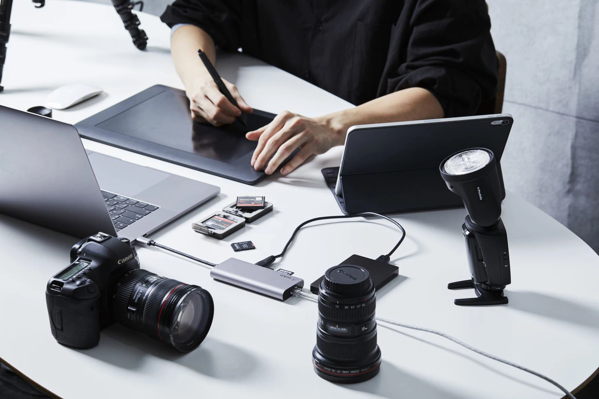

    <!-------------------------------------------blog--------------------------------------------------->
<section class="blog-details">
    <div class="container">
        <div class="blog-details-area">
            <div class="blog-details-img">
                
            </div>  
            <div class="blog_entry_content">
                <p>One of the biggest problems that users of thin and light laptops like MacBooks often face is the lack of necessary ports to connect USB, wireless mouse, and memory card reader. USB Type-C Hubs were born to solve this dilemma when from just one USB-C port, you will be able to expand many more ports at the same time. However, on the market there are many types of Hubs with high prices but only really support the 1 or 2 ports that users need. So, today let's learn how to choose the most suitable USB Type-C Hub for yourself.</p>
                <h3>What is a USB Type-C Hub?</h3>
                <p>Hub, adapter or converter is a device that helps your laptop expand to connect with many peripheral devices such as wireless mouse, removable keyboard, projector, memory card, external monitor, network cable (Cable). LAN) and add many connection ports that your machine is not equipped with such as USB-A, HDMI, Ethernet ...</p>
                <h3>Why should we equip a Hub when using a laptop?</h3>
                <p>Laptop brands are increasingly following the trend of thin and light design, leading to many types of ports that will be removed to serve that purpose. Thanks to the development of USB 4.0 and Thunderbolt ports, the USB Type-C port will be the most popular and most numerous port on future laptops. However, it is still difficult for peripheral connection devices to keep up with that growth rate, so to this day we still see projectors or single screens using a much larger and cumbersome connection cable. with Type-C port. At the same time, the mouse, removable keyboard and many other accessories still use the traditional USB Type-A port.</p>
                <p>Therefore, not equipping yourself with a USB Type-C Hub will cause you a lot of inconvenience if you want to output the laptop's image to a separate screen, use a projector to present, attach an extra mouse/desk or when you want to attach a network cable for higher internet speed (LAN wire).</p>
                <p class="blockquote">How to choose the right Hub for your needs: First, you need to determine what peripheral devices you want to connect to and how those devices use the connector, how many ports are needed. What design should I choose? Here are some factors you need to consider when buying any USB Type-C Hub</p>
                <h3>Type of connection port</h3>
                <p>USB-A: The most common are USB 2.0 and USB 3.0 ports. This is the most commonly used type of connection port, allowing to connect the phone to the computer and to most of today's peripheral devices such as computer mouse, USB memory, phone USB cable, removable keyboard. and many other accessories.</p>
                <p>HDMI: The HDMI port allows connecting computers with presentation devices to transmit high-quality images and sound. This connection port is very commonly used on laptops, TVs, projectors, and separate monitors.</p>
                <p>USB-C: A new generation connection used to replace the USB-A port and is available on most laptops today. The USB-Type C connection has the advantage of being compact and easy to unplug and connect. The USB type C standard also supports the USB 3.1 standard with a maximum data transfer rate of more than 1.2GB/s – twice the previous USB 3.0 standard.</p>
                <p>LAN RJ-45: If you feel that the speed of wifi is too slow, this is one of the indispensable ports to use high-speed internet. The RJ-45 LAN cable allows the laptop to connect to the network line directly from the network device to get a stable connection speed and a stronger connection than using a wifi connection.</p>
                <p>The number of ports: Because of the ability to expand the connection of the Hub to laptops, the more ports the Hub has, the higher the price. Therefore, if you do not have the need to connect too many devices, the hubs of about 3-5 ports are more than enough for everyday connection needs such as wireless mice, USB memory, LAN wire, HDMI. , …</p>
                <h3>Hub Design</h3>
                <p>Because your Hub will connect to many devices at once, it is natural for the Hub to get hot during use. So look to Hub products made of monolithic aluminum that help provide good heat distribution and are more durable against daily bumps and drops. In addition, there are also Hubs that you can attach directly to the laptop to create a neater and more seamless feeling when using. The downside of these Hub lines is that the entire Hub will plug into the laptop, so if there is a drop or slight collision, it will be easily damaged and the repair cost will be very high.</p>
                <p>Currently on the market there are many brands as well as Hub lines with some unnecessary ports, making it even more difficult to choose a compact hub that fits the needs and budget of the user. . Therefore, this article will introduce to you an extremely versatile and convenient Hub product from Belkin - Apple's prestigious and trusted accessory brand.</p>
            </div>
        </div>
    </div>
</section>
    <!----------------------------------------end-blog------------------------------------------>

    